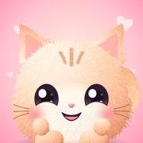

PocklingPockling care guide
Hatching · Kinds and foods · Needs · Love, food and baths · Walks and games · Talking back · Bedtime · Growing up · Stamps and berries · Outfits and rooms · Make it yours · Widget · In a browser · FAQ
What Pockling is
Pockling is a cute virtual pet for iPhone and iPad, made by 9io. You pick an egg, tap until it cracks, make the tiny creature inside your own and look after it on your device's real clock. Stroke it, feed it, bath it, walk it, play with it and tuck it into bed, and it grows from a baby to a kid to all grown up. It's free on the App Store, with no ads, no in-app purchases and no accounts, and your Pockling can never die or run away. The same game plays free in your browser.
Hatching your egg
Six eggs wait on the first screen, one for each kind of Pockling. Tap an egg to see which kind is inside, then tap Hatch this egg. Tap the egg six times to crack it. It says "Something moved!" after two taps and "Almost there!" after four, and on the sixth your Pockling pops out.
Its coat is a surprise, one of the four its kind comes in. Straight away the Make it yours studio lets you change it, or keep it just as it is (see Make it yours). Then type a name of up to 12 characters, or tap one of four suggestions, and tap Welcome home.
The six kinds and their foods
Every kind has the same needs and games. What differs is its egg, the ears and tail it hatches with, its voice and its taste in food. Each kind loves one food and spits one straight back out.
| Kind | Egg | Loves | Can't stand |
|---|---|---|---|
| Kitling | Spots | Fishy | Broccoli |
| Bunling | Hearts | Carrot | Fishy |
| Puppling | Paw prints | Crunchies | Hot chili |
| Cubling | Stars | Honey pot | Broccoli |
| Foxling | Zigzags | Apple | Carrot |
| Drakling | Scales | Hot chili | Ice cream |
Its favourite gives extra Fun and Love. The food it can't stand costs you nothing, but it takes a little Fun away and doesn't count as care, and in Snack Drop it's the food to dodge.
The five needs, and how to meet them
Five rings across the top of the screen show how your Pockling is doing, each from 0 to 100. They fall with the real clock, even while the app is closed, and fill up as you look after it.
| Ring | Falls each hour awake | How to fill it |
|---|---|---|
| 🍎 Tummy | 6 | Feed it |
| ⚡ Energy | 5 | Put it to bed. It climbs 24 an hour while it sleeps |
| 🎈 Fun | 5 | Games, walks, treats, baths and talking |
| 🫧 Clean | 2.4 | Finish a bath, which sets it to 100 |
| 💖 Love | 1.6 | Stroke it, boop it, tickle it and cuddle it |
When a need drops under 30, its ring turns red and throbs, and the button it wants in the dock (Feed, Wash, Play or Sleep) turns pink and wiggles. Love has no button, so give it a stroke or a cuddle. Time away can never take a need below 14, so a Pockling you haven't seen for days is hungry and very pleased to see you, and nothing worse.
Love, feeding and bath time
Love. Stroke it with your finger and it purrs, and in the app you can feel the purr. Tap its nose for a boop. Tap its tummy five times quickly and it rolls over laughing. Press and hold it for a cuddle. Pull it and it stretches; pull further and it comes off the floor, so you can carry it and let go.
Feeding. Tap Feed to open the food tray, then drag a food up to its mouth, or tap the food to toss it over. Apple, Carrot, Crunchies and Broccoli are always free, and the other eight foods are treats that cost berries each time. It won't eat once its Tummy reaches 97.
Bath time. Tap Wash. Rub the soap all over it, rinse off the bubbles with the shower, then rub it dry with the towel until it poofs up. Tap the duck to make it squeak, and stay for the rainbow. A finished bath sets Clean to 100.
Walkies and games
Walkies. Tap Walk, then hold your finger ahead of your Pockling and it trots after it on a little lead through the park. Every berry it passes over is yours. It sniffs flowers, chases butterflies you tap, says hello to other Pocklings and jumps in muddy puddles, so plan a bath for afterwards. After dark there are fireflies. Tap Home when you're done.
Games. Tap Play and choose one. Each finished game gives a lot of Fun and pays berries for your score, up to 40 a game, but it uses up a little Energy and Tummy. A game you leave early pays nothing.
- Fetch. Flick the ball up the screen, and the harder the flick, the further it goes. Five throws, scored by distance, with 10 extra for a catch in the air.
- Snack Drop. Slide your Pockling to catch falling snacks, and gold stars worth 5 points, for 45 seconds. Dodge the food it can't stand: catch it three times and the game is over.
- Hide and Seek. Your Pockling hides while you count to three, then you tap where you think it is. Four rounds. Its tail pokes out in the first two, and you can listen for its giggle.
Talking back
Tap the 🎤 button and allow the microphone the first time. Say something, pause, and your Pockling says it straight back in a squeaky little voice, its lips moving in time. A take ends after a short pause, or after 7 seconds of talking. Nothing is saved, and nothing you say leaves your device.
Bedtime and the real clock
Pockling runs on your device's clock. The sky through the window follows your day, from dawn after 5am to night soon after 8pm, and your Pockling's needs keep changing while you're away. When its Energy runs low, tap Sleep: it hops into bed, the lights go down and a star projector throws moons and stars on the walls. It won't go to bed while its Energy is 97 or more.
Asleep, its Energy climbs 24 points an hour and its other needs fall much more slowly. It gets up by itself once its Energy is full, or you can tap Wake up.
Growing up
A Pockling hatches as a baby, becomes a kid on its second day of care and is all grown up on its seventh. A day of care is a calendar day, by your device's clock, on which you do at least one caring thing: feed it something it eats, finish a bath, a walk or a game, put it to bed, hear it talk back, or give it a good few strokes and cuddles. The days don't have to be in a row, and a day you miss takes nothing away. As it grows it gets bigger and its voice gets a little lower.
The stamp book, berries and love levels
The first time you open Pockling on a calendar day, it puts a sticker in your stamp book and gives you berries: 12 on the first day of a streak, and 2 more for each day in a row, up to 30. Miss a day and the streak starts again from one, though your Pockling will never hold it against you. The stamp book, in the menu, shows the last four weeks.
Berries are the game's only money, and they can't be bought. You start with 30 and earn more from the daily visit, walks, games and love levels. Looking after your Pockling fills the bar under its name at the top of the screen, and each new love level brings a gift of berries.
Outfits and rooms
Spend berries in the closet (the 👒 button, or tap your berries) on 15 outfits: hats, glasses and things to wear round the neck, one of each at a time. Once you've bought an outfit it's yours to keep. Rooms, in the menu, repaint the walls. Peach is free, Mint, Lilac and Sky cost 80 berries each, Sunny 120 and Starry 200.
Make it yours, and Makeover
Right after your egg hatches, the Make it yours studio lets you change how your Pockling looks while it watches and reacts. Its six tabs are Colour (28 colours, or any colour at all with the rainbow swatch and its slider), Markings, Ears and Tail (from any of the six kinds), Wings and Eyes. 🎲 Surprise me picks a whole new look, and ↺ takes it back to how it hatched.
For a Pockling that's already home, open the menu and tap ✨ Makeover for the same studio, as often as you like, for free, whenever it's awake. A new look never changes its kind, so its voice and favourite food stay the same, and it keeps its name, its age and everything you've collected. Our blog post on creating your own virtual pet goes through every option.
The widget
The Pockling widget keeps your pet on your Home Screen (small or medium), on your Lock Screen (round, rectangular, or one line above the clock) and in StandBy. It shows your Pockling's name, how it's feeling and what it needs most, and it gets hungry and sleepy on time, just as it does in the app. Tap it to visit.
To add it, touch and hold an empty part of the Home Screen until the apps jiggle, tap Edit, then Add Widget, and search for Pockling. The widget shows your pet's look and its room's colours, but not its outfits. After a Makeover it can keep the old look for a while, so leave Pockling, open it again and give it a moment. Our virtual pet widget guide covers the Lock Screen and StandBy step by step.
Playing in a browser
The same game plays free at bitfold.9io.ai/pockling, with no sign-up, in a browser with WebGL 2. Your Pockling is saved in that browser on that device, so clearing the browser's data for the site starts a new egg, and a private window may not keep it at all. A Pockling in the browser and one in the app are separate pets. Sound starts after your first tap, and talk-back asks to use the microphone. Reminders and the widget are only in the free app.
Settings, reminders and privacy
Open the menu, then Settings, to turn Sounds, the Music box and Feel it purr on or off. In the app you can also turn on Reminders, a little note from your pet at 6pm on days you haven't visited. Your Pockling's save stays on your device, nothing you say to it leaves your device, and the app's anonymous usage data can be switched off with Share anonymous usage data. Read the privacy policy.
To begin again, Settings has Start over with a new egg. It deletes your Pockling and everything you've collected, and it can't be undone.
Questions people ask
Can my Pockling die or run away?
Never. Its needs fall with the real clock while you're away, but time alone can't take any of them below 14 out of 100. However long you've been gone, it's just very glad to see you.
How long does it take a Pockling to grow up?
It becomes a kid on its second day of care and is all grown up on its seventh. A day of care is any day, by your device's clock, on which you feed it, bath it, walk it, finish a game, put it to bed, talk to it or cuddle it. The days don't have to be in a row.
Can I change my Pockling's colour after it hatches?
Yes. Open the menu and tap Makeover to change its colour, markings, ears, tail, wings and eyes whenever it's awake. It's free, and your Pockling keeps its name, its age and everything else.
What do Pocklings like to eat?
Kitlings love Fishy, Bunlings Carrot, Pupplings Crunchies, Cublings the Honey pot, Foxlings Apple and Draklings Hot chili. Each kind also has one food it spits out, and you aren't charged for it.
Why won't my Pockling eat or go to bed?
It won't eat once its Tummy reaches 97 out of 100, and it won't go to bed while its Energy is 97 or more. It also spits out the one food its kind can't stand.
How do I add the Pockling widget?
Touch and hold an empty part of your Home Screen until the apps jiggle, tap Edit, then Add Widget, and search for Pockling. Choose the small or medium size and tap Add Widget. The Lock Screen has three sizes of its own, and StandBy shows the small one.
Why does my widget still show my Pockling's old look?
In Pockling 1.4 the widget can keep the old look for a while after a Makeover. Leave Pockling, open it again and give the widget a moment to catch up.
Does the browser version save my Pockling?
Yes, in that browser on that device. Clearing the browser's data for the site starts a new egg, and a private window may not keep it at all. A Pockling in the browser and one in the app are separate pets.
Is Pockling free?
Yes. Pockling is free on the App Store for iPhone and iPad with iOS 17 or later, with no ads, no in-app purchases and no accounts. Berries, the game's only money, come from playing and can't be bought.
Does Pockling record what I say?
Only while talk-back is on, and only long enough for your pet to say it back in a squeaky voice. Nothing is saved, and nothing you say leaves your device.
More about Pockling
- Pockling on the App Store, free for iPhone and iPad
- Play Pockling in your browser
- Create your own virtual pet in Pockling: every colour, ear and tail
- Virtual pet widget for iPhone: Home Screen, Lock Screen and StandBy
- Support, if something isn't working